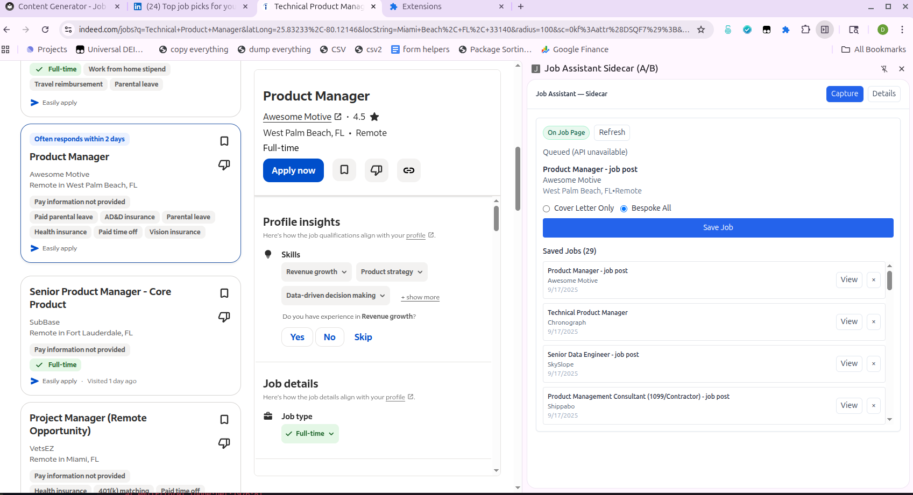
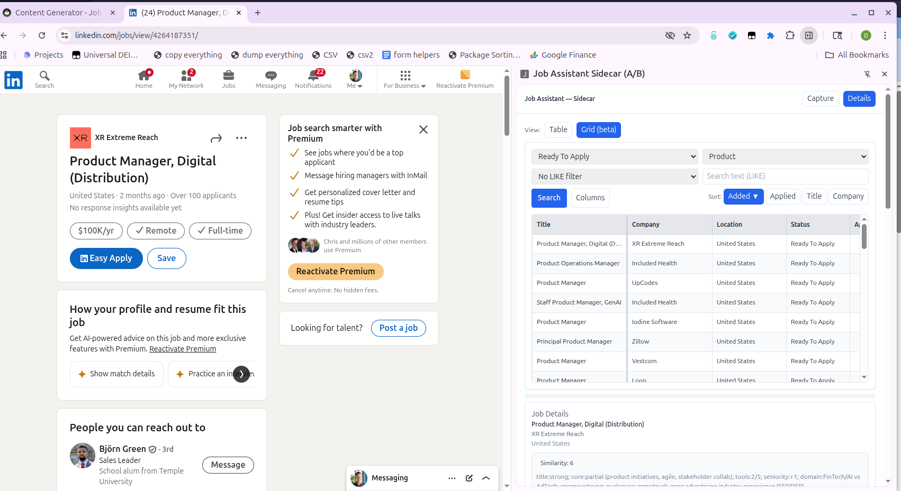
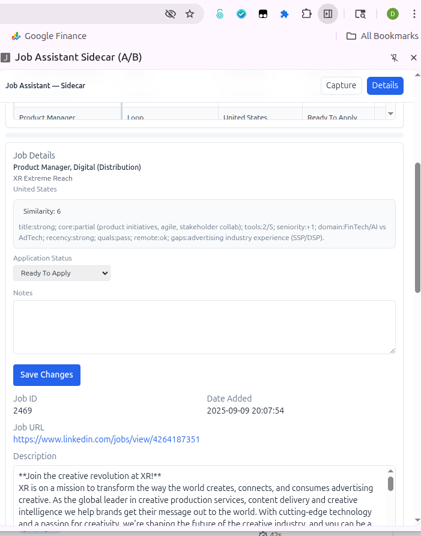
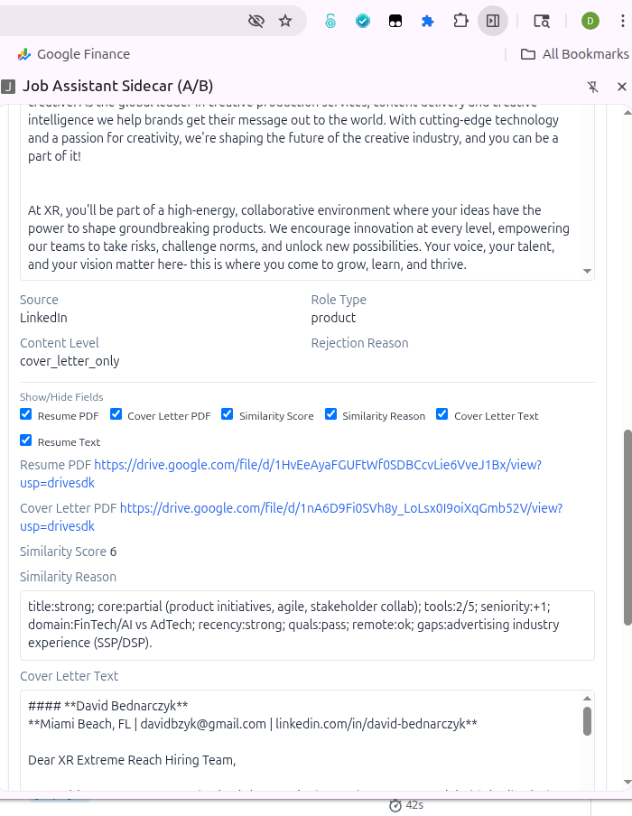
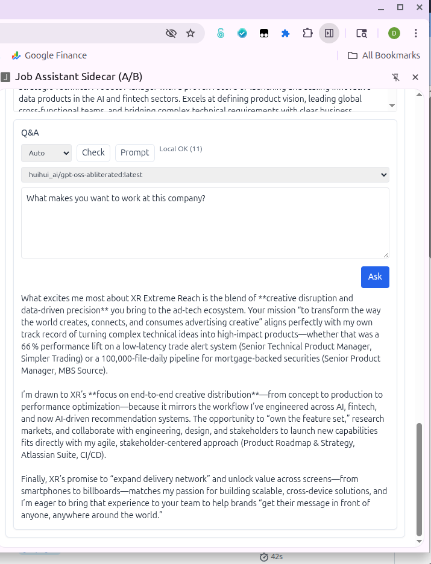

Job Assistant Sidecar (Side Panel Extension)
Lightweight Manifest V3 Chrome extension that lives entirely in the Side Panel. In Capture view, it captures the currently selected job from supported job boards and provides an operations console for reviewing, editing, and exporting jobs saved to the ADK pipeline. In detail view, you can load applications that are ready to apply, view Error applications, as well as applications in progress (failed submitting via browser use). If manually applying you can change the status once complete to applied, as well as download your custom resume and cover letter. There is also a Q&A section which allows you to add a system prompt and is injected with the context of job description, cover letter and resume, then can provide for answers to add on applicatoin questions with ease. You can chose either local ollama or a hosted provider.
Capture View

The Capture view activates on any supported job listing. The content script listens for card selection changes (e.g., clicking a job in the LinkedIn left rail) and streams updated fields into the panel without a page refresh.
Key elements:
- On Job Page badge - confirms the content script detected a structured job.
- Detected job card - shows title, company, location, and pay band exactly as parsed.
- Content level toggle - choose
Cover Letter OnlyorBespoke Allbefore saving. - Save Job - pushes the job to the backend API and mirrors it into the local Saved Jobs queue for quick reopen testing.
The Saved Jobs list keeps the most recent 100 entries in Chrome storage and mirrors the older popup extension behaviour.
Details View

Filters + Review Grid
- Primary workspace: the grid view lists every job that matches the current filters (status, role, LIKE text search).
chrome.storage.localremembers your filter and layout preferences. - Selecting any tile highlights it and immediately loads the right-hand detail panel. The job URL button beside each row opens the posting in a new tab so you can jump back into the source site.
- Column chooser hides non-critical fields when panel width is tight; sort quick keys (
Added,Applied,Title,Company) reshuffle the result set for batching reviews. - Hit Search to re-query the API. When the panel mounts it auto-selects the last job you touched, keeping your place between refreshes.

Job Header & Actions
- Displays the job meta (title, company, location) and the auto-generated similarity score/reason so you know why it cleared the content pipeline.
- Status dropdown writes back to
application_status(Ready To Apply, Application In Progress, Applied, Not a Fit, etc.) and the notes field travels with the record. Save Changes PATCHes the API and triggers a grid refresh. Job ID,Date Added, and the canonical apply link stay visible for quick cross-referencing while you manually submit.- The description block is scrollable; keep the extension narrow without losing access to the original JD.

Document Links & Visibility Controls
- Source, role type, content level, and rejection reason sit above a "Show/Hide Fields" strip so you can declutter long sessions.
- Toggle switches persist per user and control whether the custom resume/cover letter PDFs, raw text bodies, and similarity metrics appear.
- Inline controls download the exact assets generated by the content pipeline (custom resume/cover letter PDFs) and expose the raw text so you can copy/paste into an ATS without leaving the panel.

Q&A Module
- Provider dropdown routes questions to your local Ollama runtime, the remote ADK backend, or
Auto(local-first fallback to server). Checkconfirms the selected provider is reachable (e.g., "Local OK (11)" when Ollama is up).Prompttoggles the system prompt editor so you can store a custom instruction that shapes every answer.- Model dropdown lists the available models discovered on the chosen provider.
- Text area accepts the question; Ask composes a context bundle (job description, resume, cover letter) and returns a Markdown-formatted answer you can paste into an application form.
Supported Sites
- LinkedIn (card-based listings and standalone job pages)
- Indeed (new job details panel and legacy views)
- Glassdoor job pages
- ZipRecruiter job pages
The capture script is built to degrade gracefully: if a site is opened that we do not support, the panel simply displays "No job data on this page".
Quick Start
cd sidepanel-extensionnpm ci- Development with hot reload:
npm run dev - Production bundle:
npm run build - In Chrome open
chrome://extensions, enable Developer Mode, click Load unpacked, and selectsidepanel-extension/dist - Pin the "JA Sidecar" icon; clicking it opens the Side Panel beside the active tab.
Project Structure
sidepanel-extension/
|-- src/
| |-- App.svelte # Capture/Details router + view state
| |-- content.ts # Site-specific job parsers and Side Panel notifier
| |-- components/
| | |-- CombinedView.svelte # Details view (table/grid + job panel)
| | |-- ReviewTable.svelte # Table layout for job history
| | |-- GridReviewTable.svelte# Grid layout alternative
| | |-- JobDetail.svelte # Editable job detail panel
| | `-- QASection.svelte # Interview QA render helper
| `-- lib/api.ts # Fetch helpers, JobSaver, API base storage
|-- public/ # Static assets for the extension shell
|-- package.json
|-- manifest.json # Manifest V3 configuration (generated by CRXJS)
`-- vite.config.ts
Notes
- Builds use CRXJS to generate the Side Panel manifest and service worker bundle.
- The Side Panel is always available regardless of page CSP; no DOM overlay or injected UI is required.
- Job detection debounces updates so switching between job cards refreshes the Capture view in ~100ms without flooding the API.